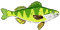

Black Spot
Columnaris Disease
Endogenous Pigment
Fibromas and
Fibrosarcomas
Gas Bubble Disease
Hemorrhagic Disease
Leech Infestation
Lymphocystis
Lymphosarcoma
Mollusc and
Crustacean Infestation
Muscle Atrophy
Muscle Necrosis
Myxosporidia
Red Plague
Saprolegniasis
Tail Rot
Tapeworm Cysts
Walleye Dermal Sarcoma
White Spot

| Name of Disease | Probable Cause | Appearance | Species of Fish Affected | More Info |
| Hemorrhagic disease | bacterial | hemorrages under skin, on internal organs swollen abdomen, bulging eyes | fish found in warm water; brown trout |  |
| Columnaris disease | bacterial | lesions on head, back and gills | most freshwater species | |
| Red plague | bacterial | lesions (small blisters, hemorrages and ulcers) of the skin, commonly found at bast of fins | freshwater (wild and captive) | |
| Tail rot | bacterial | lesions usually confined to skin muscles and fins; fins misshapen and ragged looking | trout; freshwater species (northern SK) | |
| Saprolegniasis | fungal | grey-white patches on skin | trout, white suckers | |
| Tapeworm cysts | parasitic, larval form of tapeworm | cysts in muscle and internal organs | most fish species | |
| Black spot | parasitic, larval form of fluke | small, poppy seed-sized cysts in muscle and skin | yellow perch, white and longnose sucker, brook trout, cisco, sauger, northern pike, walleye; any species | |
| Myxosporidia | protozoan parasite Myxosporidian | hemorrhage on gills and in skin; perch, nodules in muscle | yellow perch, brook trout | |
| White spot | protozoan parasite Ichthyophthirius | small white spots on the skin and gills | yellow perch, brook trout, smallmouth bass, white sucker, rainbow trout | |
| Leech infestation | attachment of leeches | skin | most freshwater species | |
| Mollusc and Crustacean infestation | attachment of molluscs and crustaceans | molluscs attach to gills, crustaceans cause ulcers of skin; fins can be affected | any fish species | |
| Lymphocystis | viral | invasion of skin by virus, cyst-like structures; gills | walleye | |
| Fibromas and fibrosarcomas | unknown in most fish; walleye, retrovirus | both tumors appear as loosely attached or firmly anchored raised masses on body, head, fins or gills; may invade muscle | northern pike and yellow perch | |
| Lymphosarcoma | viral | skin or muscle tumors; can spread to liver, kidney, spleen and thymus | northern pike | |
| Walleye dermal sarcoma | viral | tumors similar in appearance to fibrosarcomas; found on skin surface | walleye | |
| Gas bubble disease | sudden change in gas content of water; can be due to temperature change | blisters on gills and under scales | any fish species | |
| Muscle atrophy | unconfirmed | fish are abnormally thin for their length and muscle may be gelatinous or have a chalky material speckled throughout | many fish species | |
| Muscle necrosis | unconfirmed | flesh is dark brown, fibrous and may appear as scar tissue (dense and white) | walleye | |
| Endogenous pigment | ingestion of colored pigments | discoloration of muscle (green or orange) | any foraging fish; most common in yellow perch and trout species | |
| Trauma | varied | cuts, scrapes, swelling, discoloration of the fish | any species |